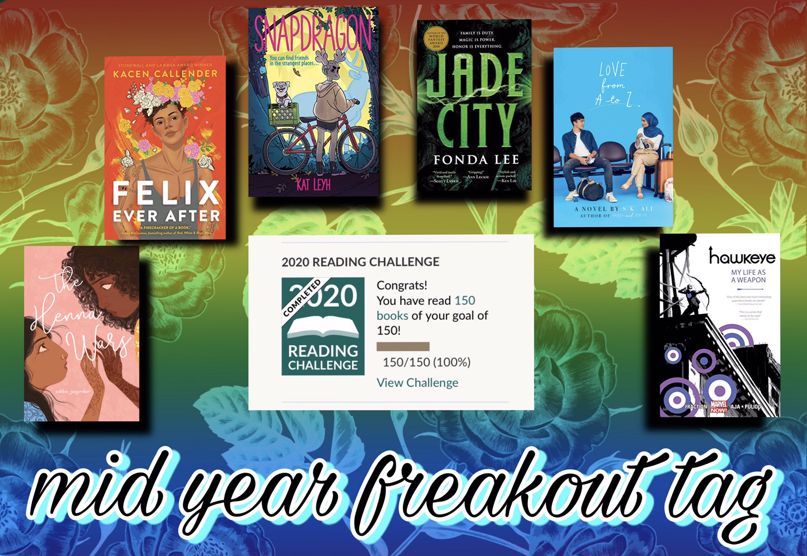

BOOK TAG
Mid Year Book Freakout Tag
AUGUST 3, 2020

When I first started writing this post, I had just met my GoodReads goal of reading 150 books in 2020. I started writing this post over a month ago (yikes) and in that time I've finished over ten more books. I wanted to make a post celebrating all the great books I've read this year, but there are just too many to do them justice in this one blog post. So, instead of covering them all, I decided to just do the Mid Year Freakout Tag!
best book you've read so far

I have read so many beautiful, stunning books this year, but the one that stuck with me the most was Hawkeye. I read the first two volumes in May after having it on my TBR for years.
I had always heard amazing things about Aja and Fraction's work, and it definitely lived up to the hype! Their monochromatic color scheme, dynamic direction, and amazing composition blew me away.
The story itself wasn't anything extraordinary: a superhero fighting bad guys while dealing with internal conflict is nothing new. But the way this story was told felt revolutionary.
I've heard many comic artist highlight this series as points of personal inspiration, and I completely understand where they are coming from. If you are at all interested in visual storytelling, I highly recommend these comics!
Synopsis: The breakout star of this summer's blockbuster Avengers film, Clint Barton - aka the self-made hero Hawkeye - fights for justice! With ex-Young Avenger Kate Bishop by his side, he's out to prove himself as one of Earth's Mightiest Heroes! SHIELD recruits Clint to intercept a packet of incriminating evidence - before he becomes the most wanted man in the world. You won't believe what is on The Tape! What is the Vagabond Code? Matt Fraction pens a Hawkeye thriller that spans the globe...and the darkest parts of Hawkeye's mind. Barton and Bishop mean double the Hawkeye and double the trouble...and stealing from the rich never looked so good.
best sequel you've read so far

I started the Daevabad trilogy by S A Chakraborty in January and absolutely fell in love with the world, the characters, and the writing. However, because the books are such tomes (all well over 500 pages), I didn't think it would be a while until I continued the series. Ultimately, I only lasted a few weeks before succumbing to my desires and reading The Kingdom of Copper.
This sequel took everything I loved from the first book and made me fall for them harder. The character development was completely stunning. The twists and turns had me on the edge of my seat for every single page. I haven't read too many sequels this year, but even if I had, I know this one would still be the best.
Because this is a sequel, the synopsis for Kingdom of Copper includes spoilers for the first book in the series. Therefore, I'm including the synopsis for the first book, The City of Brass, instead.
Synopsis: Nahri is the best con woman on the streets of 18th century Cairo. But she knows better than anyone that the trade she uses to get by—palm readings, zars, healings—are all tricks, sleights of hand, learned skills; a means to the delightful end of swindling Ottoman nobles.
But when Nahri accidentally summons an equally sly, darkly mysterious djinn warrior to her side during one of her cons, she’s forced to accept that the magical world she thought only existed in childhood stories is real. For the warrior tells her a new tale: across hot, windswept sands teeming with creatures of fire, and rivers where the mythical marid sleep; past ruins of once-magnificent human metropolises, and mountains where the circling hawks are not what they seem, lies Daevabad, the legendary city of brass, a city to which Nahri is irrevocably bound.
In that city, behind gilded brass walls laced with enchantments, behind the six gates of the six djinn tribes, old resentments are simmering. And when Nahri decides to enter this world, she learns that true power is fierce and brutal. That magic cannot shield her from the dangerous web of court politics. That even the cleverest of schemes can have deadly consequences. After all, there is a reason they say be careful what you wish for...
new release(s) you haven't read yet, but want to
There's no way I could only pick one book for this category, but I've wrestled it down to five from the dozens on my list.

Big Black: Stand at Attica by Frank "Big Black" Smith, Jared Reinmuth, and Ameziane
I have been super excited to read this graphic memoir about the historic Attica prison rebellion since before its release in February. I had been on my library's waitlist for weeks and was set to pick it up until the closures began due to the current pandemic. Unfortunately, my library still hasn't opened back up so I haven't been able to pick up what I know is an amazing book. But, I am very much looking forward to getting my hands on it whenever it is safe for me to do so!
If my library remains closed a few months from now, I will probably just be purchasing a copy of my own.
Synopsis: In the summer of 1971, the New York’s Attica State Prison is a symbol of everything broken in America – abused prisoners, rampant racism and a blind eye turned towards the injustices perpetrated on the powerless. But when the guards at Attica overreact to a minor incident, the prisoners decide they’ve had enough – and revolt against their jailers, taking them hostage and making demands for humane conditions. Frank “Big Black” Smith finds himself at the center of this uprising, struggling to protect hostages, prisoners and negotiators alike. But when the only avenue for justice seems to be negotiating with ambitious Governor Nelson Rockefeller, Big Black soon discovers there may be no hope in finding a peaceful resolution for the prisoners in Attica.

Sports is Hell by Ben Passmore
I am a huge fan of Passmore's work, from his anthology, Your Black Friend and Other Strangers, to his series, DAYGLOAHOLE. (All of his comics are sold through the independent comic publisher Silver Sprocket.) His art style, use of color, and the way he connects out of this world concepts to social injustice make his comics some of my favorites. His new graphic novel is a commentary on sports culture, and although I own a copy and have had it for months, I still haven't picked it up. But, I will! Eventually...
(And, Passmore just signed a huge deal for a book that will be released next year that just jumped to the top of my most anticipated releases list!)
Synopsis: Some wars are for religion and some are for political belief, but this one is for football. After her city wins the Super Bowl for the first time, Tea is separated from her friend during a riot and joins a small clique fighting its way through armed groups of football fanatics to met a star receiver that just might end the civil war or become the city's new oppressive leader.

Riot Baby by Tochi Onyebuchi
I haven't read any of Tochi Onyebuchi's work before but I've heard great things about his War Girls series and his short fiction. I've been disappointed in my most recent sci fi reads, and I'm told Riot Baby is the best novel to bring back my love of the genre.
I feel like too many books with dystopic revolutions don't push themselves far enough, but the story Onyebuchi has written seems to be everything I've been searching for. The premise of this story sounds incredible, so I am very much looking forward to reading this novel in the near future.
Synopsis: A global dystopian narrative and an intimate family story with quietly devastating things to say about love, fury, and the Black American experience: Ella and Kev are brother and sister, both gifted with extraordinary power. Their childhoods are defined and destroyed by structural racism and brutality. Their futures might alter the world. When Kev is incarcerated for the crime of being a young black man in America, Ella—through visits both mundane and supernatural—tries to show him the way to a revolution that could burn it all down.

The Henna Wars by Adiba Jaigirdar
I was first introduced to this novel through Saajid of Books are my Social Life: they actually released two separate videos to talk about all the amazing books they were excited for!
Since then, I have been super excited for this Muslim enemies-to-lovers romance about two girls from competing henna businesses set in Ireland. I also like that there is an interracial romance where neither of them are white! From everything I've heard, this book is beautifully written, AND THAT COVER: gorgeous!
I can't wait to read this beautiful sapphic romance and fall in love with the characters, their love, and Jaigirdar's writing.
Synopsis: When Nishat comes out to her parents, they say she can be anyone she wants—as long as she isn’t herself. Because Muslim girls aren’t lesbians. Nishat doesn’t want to hide who she is, but she also doesn’t want to lose her relationship with her family. And her life only gets harder once a childhood friend walks back into her life.
Flávia is beautiful and charismatic and Nishat falls for her instantly. But when a school competition invites students to create their own businesses, both Flávia and Nishat choose to do henna, even though Flávia is appropriating Nishat’s culture. Amidst sabotage and school stress, their lives get more tangled—but Nishat can’t quite get rid of her crush on Flávia, and realizes there might be more to her than she realized.

Phoenix Extravagant by Yoon Ha Lee
I read Yoon Ha Lee's Dragon Pearl a few months back and, even though I'm not the biggest fan of middle grade, I really enjoyed his storytelling, worldbuilding, and characters. I have since added several other books of his to my TBR, but I was even more excited when I heard he was writing another fantasy, this time with a nonbinary mc.
I love this cover and I am excited to read more dragon lore from Lee! And, of course, I am always excited to read fantasy novels about revolutionary resistence to oppressive governments. I can't wait to read where Yoon Ha Lee takes this story.
Synopsis: Gyen Jebi isn’t a fighter or a subversive. They just want to paint. One day they’re jobless and desperate; the next, Jebi finds themself recruited by the Ministry of Armor to paint the mystical sigils that animate the occupying government’s automaton soldiers. But when Jebi discovers the depths of the Razanei government’s horrifying crimes—and the awful source of the magical pigments they use—they find they can no longer stay out of politics. What they can do is steal Arazi, the ministry’s mighty dragon automaton, and find a way to fight…
most anticipated release(s) for the second half of the year
Again, there is no way I could choose only one new release, and again, I've managed to narrow it down to five!

The Death of Vivek Oji by Akwaeke Emezi
I have read and adored everything Akwaeke Emezi has written, and I completely trust them to take me on whatever journey they write into their stories.
Their first two books, Freshwater and Pet, transformed my sense of self, my relation to my community, and my view of the world, and I have no doubt their next book will also have a profound impact on me.
I can't wait for The Death of Vivek Oji to tear me apart and make me learn to peace myself backtogether, like each of their books have done before.
Synopsis: One afternoon, in a town in southeastern Nigeria, a mother opens her front door to discover her son’s body, wrapped in colorful fabric, at her feet. What follows is the tumultuous, heart-wrenching story of one family’s struggle to understand a child whose spirit is both gentle and mysterious. Raised by a distant father and an understanding but overprotective mother, Vivek suffers disorienting blackouts, moments of disconnection between self and surroundings. As adolescence gives way to adulthood, Vivek finds solace in friendships with the warm, boisterous daughters of the Nigerwives, foreign-born women married to Nigerian men. But Vivek’s closest bond is with Osita, the worldly, high-spirited cousin whose teasing confidence masks a guarded private life. As their relationship deepens—and Osita struggles to understand Vivek’s escalating crisis—the mystery gives way to a heart-stopping act of violence in a moment of exhilarating freedom.

Darius the Great Deserves Better by Adib Khorram
Darius the Great is Not Okay is one of my favorite books of all time, and I was incredibly happy to hear that Adib Khorram made plans to continue Darius's story.
Now that Darius has grown emotionally, he is more ready for romance, I am definitely ready to read all about it. My sweet, insecure boy now at the center of a love triangle? Of course I am counting down the days until this release!
I also am excited to see more of Sohrab, hear more about Darius's love of tea, and see how he handles new insecurities since he tackled his old ones. This title already has me all soft and teary, because Darius really DOES deserve better.
Synopsis: Darius Kellner is having a bit of a year. Since his trip to Iran this past spring, a lot has changed. He’s getting along with his dad, and his best friend Sohrab is only a Skype call away. Between his first boyfriend, Landon, his varsity soccer practices, and his internship at his favorite tea shop, Darius is feeling pretty okay. Like he finally knows what it means to be Darius Kellner.
Then, of course, everything changes. Darius’s grandmothers are in town for a long visit while his dad is gone on business, and Darius isn’t sure whether they even like him. The internship isn’t what Darius thought it would be, and now he doesn’t know about turning tea into his career. He was sure he liked Landon, but when he starts hanging out with Chip–soccer teammate and best friend of Trent Bolger, epic bully–well, he’s just not so sure about Landon anymore, either.
Darius thought he knew exactly who he was and what he wanted, but maybe he was wrong. Maybe he deserves better.

How it All Blew Up by Arvin Ahmadi
Although I haven't read any of Arvin Ahmadi's work before, I am still very excited for his next book. I haven't always loved coming-out stories in the past, but this story seems to promise a new perspective beyond those other books.
Amir engages in different spaces differently and tries to separate his "old" life at home with his family from his "new" life in Italy. How he exists in these spaces is only further complicated by the way Islamaphobia makes travelling more difficult. I'm really interested to see how Ahmadi tackles all these ideas and to meet Amir!
Synopsis: Eighteen-year-old Amir Azadi always knew coming out to his Muslim family would be messy--he just didn't think it would end in an airport interrogation room. But when faced with a failed relationship, bullies, and blackmail, running away to Rome is his only option. Right?
Soon, late nights with new friends and dates in the Sistine Chapel start to feel like second nature... until his old life comes knocking on his door. Now, Amir has to tell the whole truth and nothing but the truth to a US Customs officer, or risk losing his hard-won freedom.

The Ever Cruel Kingdom by Rin Chupeco
The Never Tilting World, the first book of this duology, was one of my favorite reads of 2019. It was the first book I have read by Rin Chupeco, and I have since become a huge fan.
The way they built the romances, alternating POVs, and an environmentally damaged, magical world pulled me in immediately. I am super excited to see how they conclude this story, and I'm looking forward to reading so many more of their works in the future.
I haven't purchased my own copy of The Never Tilting World yet, but I hope to do so soon so that I can keep this amazing duology on my shelves forever.
Because this is a sequel, the synopsis for The Ever Cruel Kingom includes spoilers for the first book in the series. Therefore, I'm including the synopsis for the first book, The Never Tilting World, instead.
Synopsis: Generations of twin goddesses have long ruled Aeon. But seventeen years ago, one sister’s betrayal defied an ancient prophecy and split their world in two. The planet ceased to spin, and a Great Abyss now divides two realms: one cloaked in perpetual night, the other scorched by an unrelenting sun.
While one sister rules Aranth—a frozen city surrounded by a storm-wracked sea —her twin inhabits the sand-locked Golden City. Each goddess has raised a daughter, and each keeps her own secrets about her sister’s betrayal.
But when shadowy forces begin to call their daughters, Odessa and Haidee, back to the site of the Breaking, the two young goddesses—along with a powerful healer from Aranth, and a mouthy desert scavenger—set out on separate journeys across treacherous wastelands, desperate to heal their broken world. No matter the sacrifice it demands.

The Thirty Names of Night by Zeyn Joukhadar
Everything I know about this book, I love. I love the cover, I love the title, I love the ownvoices trans rep, and I love what I've heard of the story!
I read Zeyn Joukhadar's debut novel, A Map of Salt and Stars, in July and completely fell in love with his writing. I was so moved by his lyrical writing, his shape poetry, his dual perspective and dual timeline, and everything about his novel. That book had such a deep emotional impact on me; I can only imagine the impact his next book will have on me when I am intimately connected to the main character.
Synopsis: Five years after a suspicious fire killed his ornithologist mother, a closeted Syrian American trans boy sheds his birth name and searches for a new one. He has been unable to paint since his mother’s ghost has begun to visit him each evening. As his grandmother’s sole caretaker, he spends his days cooped up in their apartment, avoiding his neighborhood masjid, his estranged sister, and even his best friend (who also happens to be his longtime crush). The only time he feels truly free is when he slips out at night to paint murals on buildings in the once-thriving Manhattan neighborhood known as Little Syria.
One night, he enters the abandoned community house and finds the tattered journal of a Syrian American artist named Laila Z, who dedicated her career to painting the birds of North America. She famously and mysteriously disappeared more than sixty years before, but her journal contains proof that both his mother and Laila Z encountered the same rare bird before their deaths. In fact, Laila Z’s past is intimately tied to his mother’s—and his grandmother’s—in ways he never could have expected. Even more surprising, Laila Z’s story reveals the histories of queer and transgender people within his own community that he never knew. Realizing that he isn’t and has never been alone, he has the courage to officially claim a new name: Nadir, an Arabic name meaning rare.
As unprecedented numbers of birds are mysteriously drawn to the New York City skies, Nadir enlists the help of his family and friends to unravel what happened to Laila Z and the rare bird his mother died trying to save. Following his mother’s ghost, he uncovers the silences kept in the name of survival by his own community, his own family, and within himself, and discovers the family that was there all along.
biggest disappointment

I read the first two books in the Truly, Devious series last year and wasn't particularly amazed by either of them, but I didn't hate them either.
In the beginning, I really enjoyed the dark academia aesthetics, the weirdness, and the mystery of it all. But I have had a hard time staying intrigued by this series, and it's not just because Maureen Johnson misgendered her only nonbinary character.
I really believe this trilogy would have been better as one, long book. It's very difficult to keep suspense running through three books but still be interesting enough to keep readers intrigued.
I ended up DNFing this book halfway through because I was so totally uninterested by everything that was happening.
Because this is a sequel, the synopsis for The Hand on the Wall includes spoilers for the first two books in the series. Therefore, I'm including the synopsis for the first book, Truly, Devious, instead.
Synopsis: Ellingham Academy is a famous private school in Vermont for the brightest thinkers, inventors, and artists. It was founded by Albert Ellingham, an early twentieth century tycoon, who wanted to make a wonderful place full of riddles, twisting pathways, and gardens. “A place,” he said, “where learning is a game.” Shortly after the school opened, his wife and daughter were kidnapped. The only real clue was a mocking riddle listing methods of murder, signed with the frightening pseudonym “Truly, Devious.” It became one of the great unsolved crimes of American history. True-crime aficionado Stevie Bell is set to begin her first year at Ellingham Academy, and she has an ambitious plan: She will solve this cold case. That is, she will solve the case when she gets a grip on her demanding new school life and her housemates: the inventor, the novelist, the actor, the artist, and the jokester. But something strange is happening. Truly Devious makes a surprise return, and death revisits Ellingham Academy. The past has crawled out of its grave. Someone has gotten away with murder.
biggest surprise

Sasha from the Gym by Otava Heikkilä
After wanting to read his graphic novels for years, I was gifted the first two volumes of Otava Heikkilä's Letters for Lucardo series. It was no surprise to me how much I absolutely adored those erotic historical fantasy, but a few months later, I was completely surprised by the release of his newest comic, Sasha from the Gym. The comic is less than 100 pages, but the lineart and the attraction and the coloring and the relationship from two trans men with very different gender experiences and senses of style and everything else about this comic completely blew my mind! If I hadn't already been a fan of Heikkilä's work, this definitely cemented that fact and made me even more excited for everything he will create in the future.
Synopsis: His name is Sasha, I met him at the gym. He's the only one besides me who visits it late at night, so we got talking. Sasha from the Gym is a 64-page queer adult comic for ages 18+.
favorite new author

Aiden Thomas, author of Cemetery Boys (2020) and Lost in the Never Woods (2021)
A few months ago I was given the amazing opportunity to be a part of the Cemetery Boys Street Team and was given an ARC of my most anticipated book of the year. I had super high expectations for this book, and somehow Aiden Thomas completely surpassed them!
Every part of this book was so beautifully crafted: the characters, the plot, the romance, EVERYTHING! There is really nothing I would change about this book if I could, and Thomas' writing talent was so clearly displayed on every single page. I can't wait to read their next book and everything they write after that!
Synopsis: When his traditional Latinx family has problems accepting his gender, Yadriel becomes determined to prove himself a real brujo. With the help of his cousin and best friend Maritza, he performs the ritual himself, and then sets out to find the ghost of his murdered cousin and set it free.
However, the ghost he summons is actually Julian Diaz, the school’s resident bad boy, and Julian is not about to go quietly into death. He’s determined to find out what happened and tie up some loose ends before he leaves. Left with no choice, Yadriel agrees to help Julian, so that they can both get what they want. But the longer Yadriel spends with Julian, the less he wants to let him leave.
newest fictional crush

Zeynab from Love from A to Z by S K Ali
I read Love from A to Z a few months ago and immediately had to buy my own copy of the sweetest YA romance I have ever read. I love Adam and Zeynab's love story immensely, but my love for Zeynab was love at first sight!
The book begins with Zeynab's conflict with an Islamaphobic teacher, and when she stands up for herself she is suspended. Even from this scene, when S K Ali is first introducing us to Zeynab, I knew I loved her. I already wanted to protect her, even though Zeynab is fully capable of protecting herself and has no proclivities for attempted chivalry.
Throughout the book, Ali shows us Zeynab in all her hot-headed, head-strong glory and each moment had me silently cheering her on. There are hundreds of reasons why I'd recommend this book, but the first reason would be for Zeynab!
Synopsis: A marvel: something you find amazing. Even ordinary-amazing. Like potatoes—because they make French fries happen. Like the perfect fries Adam and his mom used to make together. An oddity: whatever gives you pause. Like the fact that there are hateful people in the world. Like Zayneb’s teacher, who won’t stop reminding the class how “bad” Muslims are. But Zayneb, the only Muslim in class, isn’t bad. She’s angry. When she gets suspended for confronting her teacher, and he begins investigating her activist friends, Zayneb heads to her aunt’s house in Doha, Qatar, for an early start to spring break. Fueled by the guilt of getting her friends in trouble, she resolves to try out a newer, “nicer” version of herself in a place where no one knows her.
Then her path crosses with Adam’s. Since he got diagnosed with multiple sclerosis in November, Adam’s stopped going to classes, intent, instead, on perfecting the making of things. Intent on keeping the memory of his mom alive for his little sister. Adam’s also intent on keeping his diagnosis a secret from his grieving father.
Alone, Adam and Zayneb are playing roles for others, keeping their real thoughts locked away in their journals. Until a marvel and an oddity occurs…
Marvel: Adam and Zayneb meeting. Oddity: Adam and Zayneb meeting.
newest favorite character

Theo/The Surgeon from An Unkindness of Ghosts by Rivers Solomon
I finished reading An Unkindness of Ghosts a few days ago, and though I loved so many of the characters, I cannot stop thinking about Theo.
Most of the novel is written from the point of view of Aster, who has a very interesting relationship with Theo. You could say Theo is Aster's love interest, you could say he is her mentor, but either way they are very uniquely related. But, there are a few chapters told from other perspectives. And the chapter from Theo's perspective was the exact moment I felt the novel really picked up.
Theo is a very devout person. He is very gifted in his medical abilities. He has conflicts about his gender and sexuality, and other people's perceptions of his gender and sexuality. I love him immensely and attached to him much faster than I do with most characters.
I love Rivers Solomon's writing, and I especially enjoyed how they wrote Theo's character. For so much of the novel we don't get to see exactly what is going on in his head, but the small peak we got made me love their writing so much more.
Synopsis: Odd-mannered, obsessive, withdrawn, Aster has little to offer folks in the way of rebuttal when they call her ogre and freak. She's used to the names; she only wishes there was more truth to them. If she were truly a monster, as they accuse, she'd be powerful enough to tear down the walls around her until nothing remained of her world, save for stories told around the cookfire.
Aster lives in the low-deck slums of the HSS Matilda, a space vessel organized much like the antebellum South. For generations, the Matilda has ferried the last of humanity to a mythical Promised Land. On its way, the ship's leaders have imposed harsh moral restrictions and deep indignities on dark-skinned sharecroppers like Aster, who they consider to be less than human.
When the autopsy of Matilda's sovereign reveals a surprising link between his death and her mother's suicide some quarter-century before, Aster retraces her mother's footsteps. Embroiled in a grudge with a brutal overseer and sowing the seeds of civil war, Aster learns there may be a way off the ship if she's willing to fight for it.
book that made you cry

My Dark Vanessa by Kate Elizabeth Russell
I had expected My Dark Vanessa to make me cry, but I didn't think it would make me cry THAT MUCH. I usually am moved by such displays of trauma, but Russell's story was so well constructed—it is clear that she spent over a decade writing this novel and it was definitely time well used.
By telling this story through two different points of time, my heart was not only broken when the trauma started in 2000, but was broken over and over again in 2017 through showing all the ways the trauma impacted Vanessa, and continued to impact her even after it "ended." So many parts of this book left me in emotional shatters, and yet I can't wait to read it again.
Synopsis: Exploring the psychological dynamics of the relationship between a precocious yet naïve teenage girl and her magnetic and manipulative teacher, a brilliant, all-consuming read that marks the explosive debut of an extraordinary new writer.
2000. Bright, ambitious, and yearning for adulthood, fifteen-year-old Vanessa Wye becomes entangled in an affair with Jacob Strane, her magnetic and guileful forty-two-year-old English teacher.
2017. Amid the rising wave of allegations against powerful men, a reckoning is coming due. Strane has been accused of sexual abuse by a former student, who reaches out to Vanessa, and now Vanessa suddenly finds herself facing an impossible choice: remain silent, firm in the belief that her teenage self willingly engaged in this relationship, or redefine herself and the events of her past. But how can Vanessa reject her first love, the man who fundamentally transformed her and has been a persistent presence in her life? Is it possible that the man she loved as a teenager—and who professed to worship only her—may be far different from what she has always believed?
Alternating between Vanessa’s present and her past, My Dark Vanessa juxtaposes memory and trauma with the breathless excitement of a teenage girl discovering the power her own body can wield. Thought-provoking and impossible to put down, this is a masterful portrayal of troubled adolescence and its repercussions that raises vital questions about agency, consent, complicity, and victimhood. Written with the haunting intimacy of The Girls and the creeping intensity of Room, My Dark Vanessa is an era-defining novel that brilliantly captures and reflects the shifting cultural mores transforming our relationships and society itself.
book that made you laugh

Take a Hint, Dani Brown by Talia Hibbert
Although I read two other Talia Hibbert books this year, Get a Life, Chloe Brown and Work for It, and although they were both completely hilarious, Take a Hint, Dani Brown definitely made me laugh the most.
Both Dani and Zaf are really funny characters, and Hibbert's humorous writing made them that much more enjoyable. I read this novel on audiobook and there were so many times where I had to pause because I was laughing too hard to hear the narrator.
(There was also something about reading this romance on audiobook while Zaf read his romances on audiobook that made the experience so fun, too.)
Synopsis:Danika Brown knows what she wants: professional success, academic renown, and an occasional roll in the hay to relieve all that career-driven tension. But romance? Been there, done that, burned the T-shirt. Romantic partners, whatever their gender, are a distraction at best and a drain at worst. So Dani asks the universe for the perfect friend-with-benefits—someone who knows the score and knows their way around the bedroom.
When brooding security guard Zafir Ansari rescues Dani from a workplace fire drill gone wrong, it’s an obvious sign: PhD student Dani and ex-rugby player Zaf are destined to sleep together. But before she can explain that fact, a video of the heroic rescue goes viral. Now half the internet is shipping #DrRugbae—and Zaf is begging Dani to play along. Turns out, his sports charity for kids could really use the publicity. Lying to help children? Who on earth would refuse?
Dani’s plan is simple: fake a relationship in public, seduce Zaf behind the scenes. The trouble is, grumpy Zaf’s secretly a hopeless romantic—and he’s determined to corrupt Dani’s stone-cold realism. Before long, he’s tackling her fears into the dirt. But the former sports star has issues of his own, and the walls around his heart are as thick as his... um, thighs.
Suddenly, the easy lay Dani dreamed of is more complex than her thesis. Has her wish backfired? Is her focus being tested? Or is the universe just waiting for her to take a hint?
most beautiful book you've bought this year

Felix Ever After by Kacen Callender
It was too difficult for me to choose which book I bought this year is the most beautiful, but Felix Ever After is without a doubt the book with the most beautiful cover.
In the novel, Felix ends up creating a series of self portraits, and even though Felix is a fictional character, and the cover was made by real people, I can see all the self love Felix would have included in his portraits in this cover. Alex Cabal and Chris Kwon did such a beautiful job crafting the cover and I love it so much—even though I'm not a huge fan of the color orange, including Felix's scars was icing on the cake of this book's great trans rep.
Synopsis: From Stonewall and Lambda Award–winning author Kacen Callender comes a revelatory YA novel about a transgender teen grappling with identity and self-discovery while falling in love for the first time.
Felix Love has never been in love—and, yes, he’s painfully aware of the irony. He desperately wants to know what it’s like and why it seems so easy for everyone but him to find someone. What’s worse is that, even though he is proud of his identity, Felix also secretly fears that he’s one marginalization too many—Black, queer, and transgender—to ever get his own happily-ever-after.
When an anonymous student begins sending him transphobic messages—after publicly posting Felix’s deadname alongside images of him before he transitioned—Felix comes up with a plan for revenge. What he didn’t count on: his catfish scenario landing him in a quasi–love triangle....
But as he navigates his complicated feelings, Felix begins a journey of questioning and self-discovery that helps redefine his most important relationship: how he feels about himself.
Felix Ever After is an honest and layered story about identity, falling in love, and recognizing the love you deserve.
book(s) you need to read by the end of the year
There are so many books on my list that I want to get to, but I've managed to limit it to five titles once again.

The Poppy War by R F Kuang
I have heard so many amazing things about this series from so many readers whose opinions I highly respect. And with the last book of the trilogy coming out this year, I really want to read the first two books ahead of the last release so that I can enjoy the hype along with everyone else.
Thankfully, Krisha of Bookathon Blog and Nandini of Novels and Nebulas are putting together #ThePoppyWarathon starting in September!
I'm super excited to finally start this series, and I'm so grateful they're setting up this readathon for it.
Synopsis: When Rin aced the Keju—the Empire-wide test to find the most talented youth to learn at the Academies—it was a shock to everyone: to the test officials, who couldn’t believe a war orphan from Rooster Province could pass without cheating; to Rin’s guardians, who believed they’d finally be able to marry her off and further their criminal enterprise; and to Rin herself, who realized she was finally free of the servitude and despair that had made up her daily existence. That she got into Sinegard—the most elite military school in Nikan—was even more surprising. But surprises aren’t always good.
Because being a dark-skinned peasant girl from the south is not an easy thing at Sinegard. Targeted from the outset by rival classmates for her color, poverty, and gender, Rin discovers she possesses a lethal, unearthly power—an aptitude for the nearly-mythical art of shamanism. Exploring the depths of her gift with the help of a seemingly insane teacher and psychoactive substances, Rin learns that gods long thought dead are very much alive—and that mastering control over those powers could mean more than just surviving school.
For while the Nikara Empire is at peace, the Federation of Mugen still lurks across a narrow sea. The militarily advanced Federation occupied Nikan for decades after the First Poppy War, and only barely lost the continent in the Second. And while most of the people are complacent to go about their lives, a few are aware that a Third Poppy War is just a spark away . . .
Rin’s shamanic powers may be the only way to save her people. But as she finds out more about the god that has chosen her, the vengeful Phoenix, she fears that winning the war may cost her humanity . . . and that it may already be too late.

Jade City by Fonda Lee
This book was highly recommended to me, and then I was gifted a copy from Mahalia from Nerd it This Way for Bookweb vaLITines bookish cupid!
Even though the final book of the series won't be released until next year, I still want to read this book and its sequal, Jade War, as soon as possible!
Every time I see someone's non-spoilery reactions of them totally freaking out over this series, I want to read it more and more. I'm just very excited to be ruined by whatever Fonda Lee has in store.
Synopsis: The Kaul family is one of two crime syndicates that control the island of Kekon. It's the only place in the world that produces rare magical jade, which grants those with the right training and heritage superhuman abilities. The Green Bone clans of honorable jade-wearing warriors once protected the island from foreign invasion--but nowadays, in a bustling post-war metropolis full of fast cars and foreign money, Green Bone families like the Kauls are primarily involved in commerce, construction, and the everyday upkeep of the districts under their protection. When the simmering tension between the Kauls and their greatest rivals erupts into open violence in the streets, the outcome of this clan war will determine the fate of all Green Bones and the future of Kekon itself.

An Ember in the Ashes by Sabaa Tahir
Sabaa Tahir's An Ember in the Ashes is the first novel of another beloved fantasy series with the final book releasing this year that I want to catch up with. This book also comes strongly recommended and I am really excited to finally read it. I was able to pick this book up from my library before it closed, and somehow I still haven't read it yet!
Another reason why I am interested in this series is because I've heard a lot of people argue that it should be considered New Adult rather than Young Adult, and lately I've been enjoying the older end of Young Adult stories. But usually when I read New Adult, it is only romance and never fantasy!
Synopsis: Laia is a slave. Elias is a soldier. Neither is free. Under the Martial Empire, defiance is met with death. Those who do not vow their blood and bodies to the Emperor risk the execution of their loved ones and the destruction of all they hold dear.
It is in this brutal world, inspired by ancient Rome, that Laia lives with her grandparents and older brother. The family ekes out an existence in the Empire’s impoverished backstreets. They do not challenge the Empire. They’ve seen what happens to those who do.
But when Laia’s brother is arrested for treason, Laia is forced to make a decision. In exchange for help from rebels who promise to rescue her brother, she will risk her life to spy for them from within the Empire’s greatest military academy.
There, Laia meets Elias, the school’s finest soldier—and secretly, its most unwilling. Elias wants only to be free of the tyranny he’s being trained to enforce. He and Laia will soon realize that their destinies are intertwined—and that their choices will change the fate of the Empire itself.

The Fifth Season by N K Jemisin
I know I am super late to the genius and beauty that is N K Jemisin's writing, but I am still very excited to read all of her books!
I started reading her short story collection How Long 'Til Black Future Month? a few months ago and her writing challenged all of my expectations for genre fiction. I really loved her short form writing and am looking forward to see what shape her stories take in a longer form. I hope to read all of her books eventually, and just checked out her most recent book, The City We Became, from my eLibrary. But, I have my own copy of The Fifth Season, so that should be enough incentive to actually finally read it!
Synopsis: This is the way the world ends. Again. Three terrible things happen in a single day. Essun, a woman living an ordinary life in a small town, comes home to find that her husband has brutally murdered their son and kidnapped their daughter. Meanwhile, mighty Sanze -- the world-spanning empire whose innovations have been civilization's bedrock for a thousand years -- collapses as most of its citizens are murdered to serve a madman's vengeance. And worst of all, across the heart of the vast continent known as the Stillness, a great red rift has been been torn into the heart of the earth, spewing ash enough to darken the sky for years. Or centuries. Now Essun must pursue the wreckage of her family through a deadly, dying land. Without sunlight, clean water, or arable land, and with limited stockpiles of supplies, there will be war all across the Stillness: a battle royale of nations not for power or territory, but simply for the basic resources necessary to get through the long dark night. Essun does not care if the world falls apart around her. She'll break it herself, if she must, to save her daughter.

Before the Devil Breaks You by Libba Bray
I started reading Libba Bray's Diviners series several months ago and have actually been taking my time reading each book, rather than speed reading the whole series like I usually do.
I really like how Bray writes historical fantasy and all the different characters we've been introduced to, even though I was a bit disappointed in some of the choices she made in the second book. But, that disappointment wasn't enough to turn me off from the series altogether. I managed to pick this book up before my library closed and, although I have yet to actually read it, I know I will finish it, eventually, at some point this year.
Synopsis: After battling a supernatural sleeping sickness that claimed two of their own, the Diviners have had enough lies. They're more determined than ever to uncover the mystery behind their extraordinary powers, even as they face off against an all-new terror. Out on Ward's Island, far from the city's bustle, sits a mental hospital haunted by the lost souls of people long forgotten--ghosts who have unusual and dangerous ties to the man in the stovepipe hat, also known as the King of Crows. With terrible accounts of murder and possession flooding in from all over and New York City on the verge of panic, the Diviners must band together and brave the sinister ghosts invading the asylum, a fight that will bring them face-to-face with the King of Crows. But as the explosive secrets of the past come to light, loyalties and friendships will be tested, love will hang in the balance, and the Diviners will question all that they've ever known. All the while, malevolent forces gather from every corner in a battle for the very soul of a nation--a fight that could claim the Diviners themselves